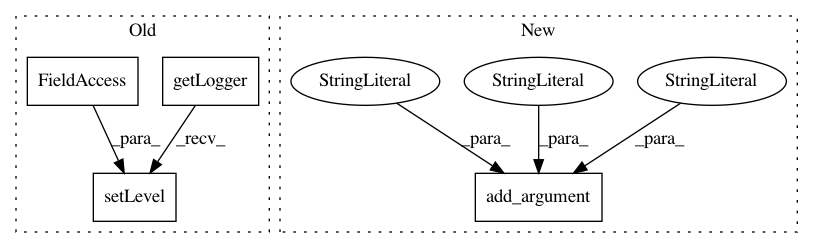

d14650e506db1e04732a9b5e72f20c67b755aa0d,theanolm/src/theanolm-train.py,,,#,102
Before Change
logging.basicConfig(format="%(funcName)s: %(message)s")
if args.debug:
logging.getLogger("root").setLevel(logging.DEBUG)
theano.config.compute_test_value = "warn"
else:
logging.getLogger("root").setLevel(logging.INFO)
theano.config.compute_test_value = "off"
After Change
argument_group.add_argument(
"--log-file", metavar="FILE", type=str, default="-",
help="path where to write log file (default is standard output)")
argument_group.add_argument(
"--log-level", metavar="LEVEL", type=str, default="info",
help="minimum level of events to log, one of "debug", "info", "warn" "
"(default "info")")
argument_group.add_argument(
"--log-update-interval", metavar="N", type=int, default=1000,
help="print statistics of every Nth mini-batch update; quiet if less than "
"one (default 1000)")
In pattern: SUPERPATTERN
Frequency: 3
Non-data size: 4
Instances
Project Name: senarvi/theanolm
Commit Name: d14650e506db1e04732a9b5e72f20c67b755aa0d
Time: 2015-10-06
Author: seppo.git@marjaniemi.com
File Name: theanolm/src/theanolm-train.py
Class Name:
Method Name:
Project Name: dmlc/gluon-nlp
Commit Name: 8d43da9a82fd73db14c4cacfa068261d84ea2610
Time: 2020-02-02
Author: szhengac@users.noreply.github.com
File Name: scripts/bert/run_pretraining.py
Class Name:
Method Name:
Project Name: AIRLab-POLIMI/mushroom
Commit Name: 8e5522ff50124a9ba05a7cdddfff7df8ebbafc14
Time: 2017-02-26
Author: carlo.deramo@gmail.com
File Name: examples/q_learning_grid.py
Class Name:
Method Name: